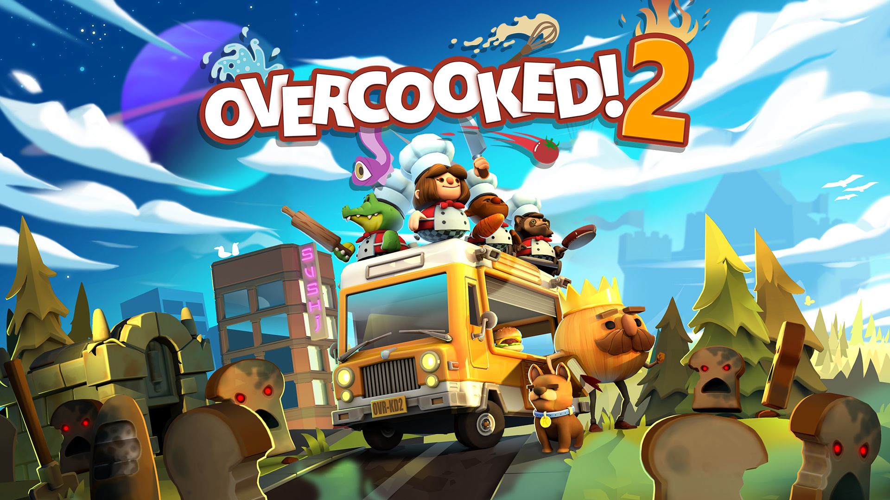
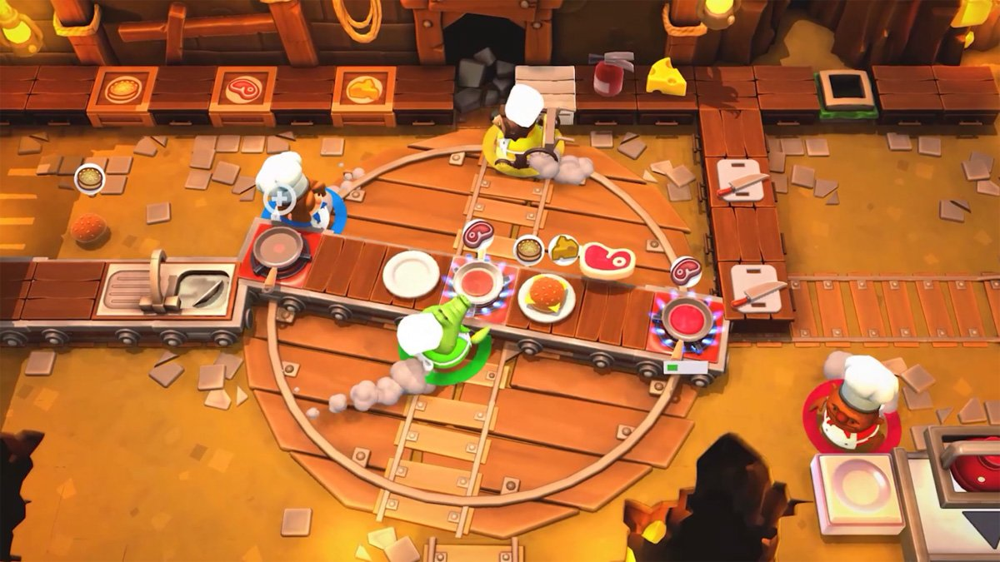

Overcooked2
Overcooked 2 (stylised as Overcooked! 2) is a cooperative cooking simulation video game developed by Team17 alongside Ghost Town Games, and published by Team17. The sequel to Overcooked!, it was released for Microsoft Windows, Nintendo Switch, PlayStation 4 and Xbox One on August 7, 2018. Overcooked: All You Can Eat, a compilation game that includes both Overcooked and Overcooked 2, was released for PlayStation 5 and Xbox Series X/S.
In the cooking simulator game Overcooked 2, teams of up to four players cooperatively prepare and cook orders in absurd restaurants. Players gather, chop, and cook ingredients, combine them on plates, serve dishes, and wash dishes. Between coordinating short orders and bumping into each other's characters, the game tends to overwhelm. The sequel builds atop the original game, which was released in 2016, with new interactive levels, restaurant themes, chef costumes, and recipes. Some levels have moving floors and other obstacles that complicate the cooking process, including portals, moving walkways, and impassable fires. Other levels transition between settings and recipes, such as one that begins with preparing salads in a hot air balloon and ends crash-landed in a sushi kitchen. The sequel introduces ingredient tossing, such that players can throw items to another chef or pot from far away, and online multiplayer, in which teams can connect either across a local wireless network or through online matchmaking.
